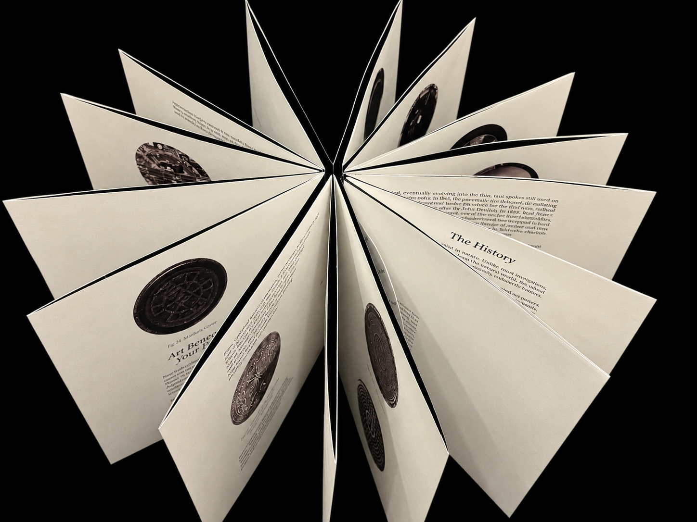
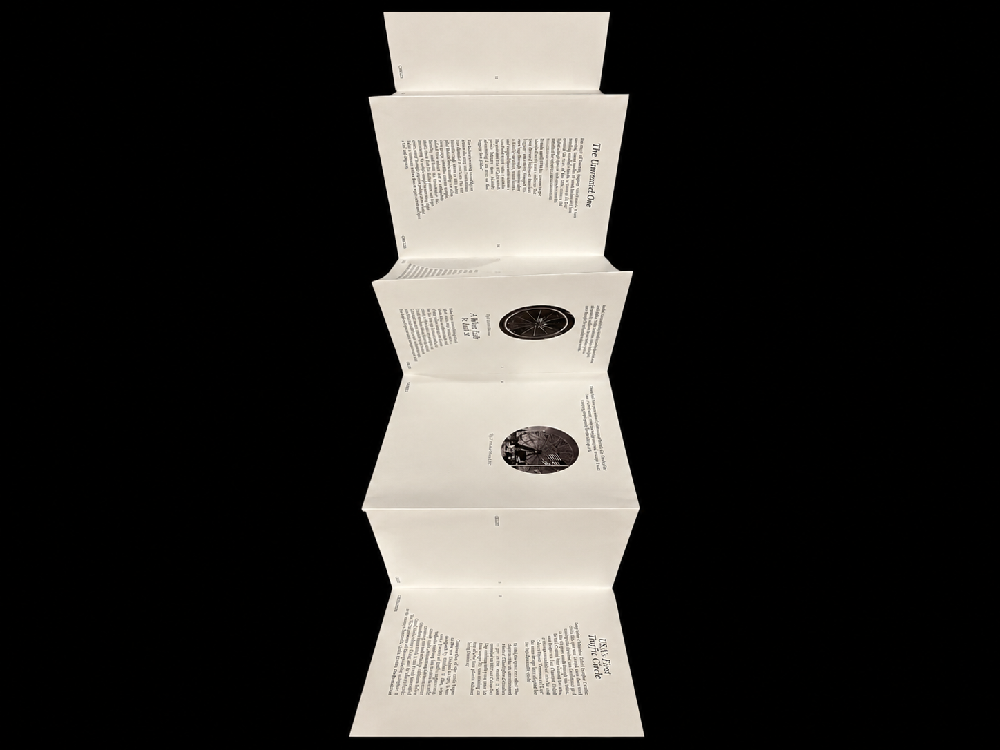
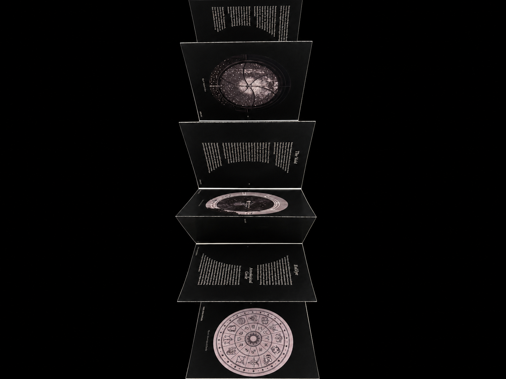
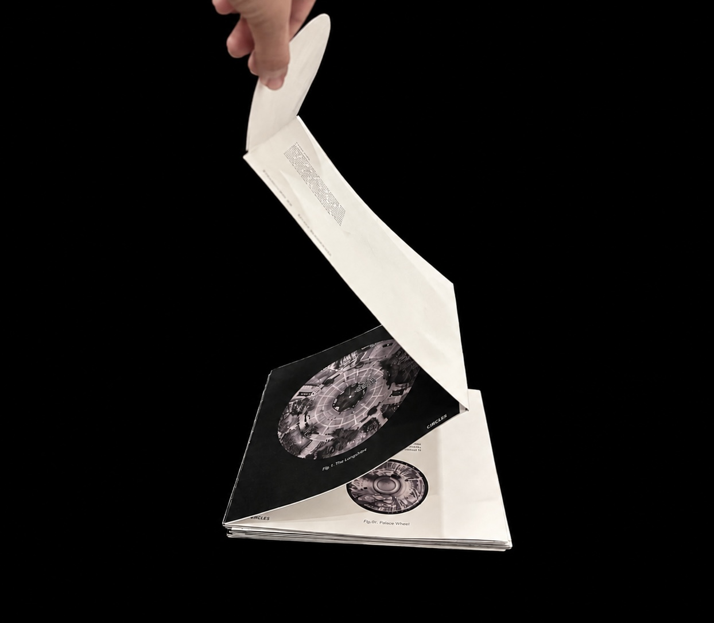
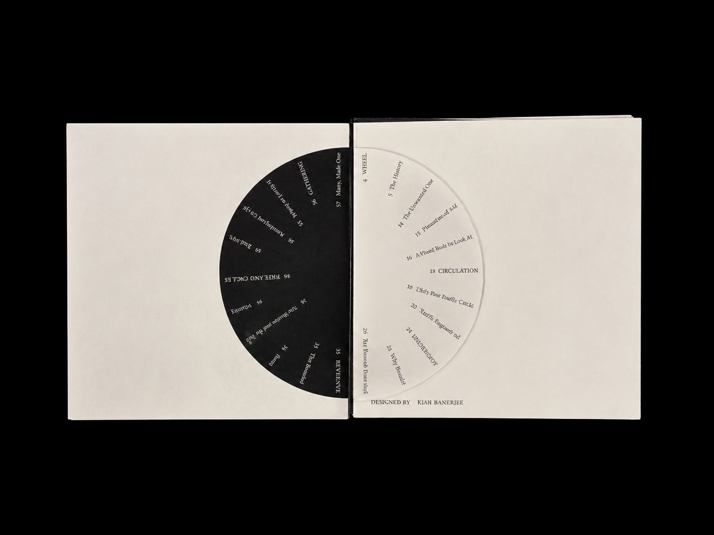
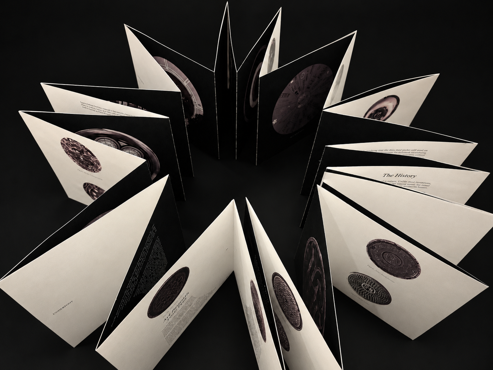
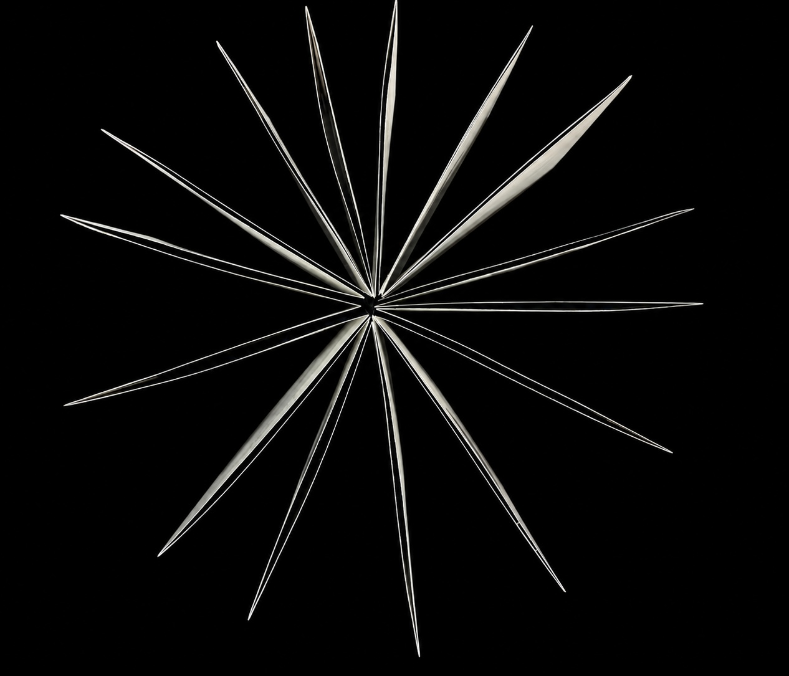

New York is full of circles: underfoot, overhead and built into the places people gather and pray. This publication collects them and asks a simple question: why round? Some circles exist because they have to, and others exist because of what they mean. Printed as a circular accordion fold, the book separates the two when it is opened and joins them into one continuous loop when it is closed.
Detail
This publication began with a simple act of collecting: photographing the circles that appear across New York City. What started as a study of wheels on cars, bikes, carts and suitcases grew into a broader search for the circle as a recurring form, from manhole covers and traffic mirrors to synagogue windows, Bethesda Fountain, the Unisphere and the Guggenheim. Combining ground-level photography with aerial views from Google Maps and research into symbolic motifs like the wheel of life, the evil eye and astrology charts, the project divides its findings into two sides: the functional circle, round because it has to be, and the symbolic circle, round because of what it means.
Design
The publication is printed entirely in black and white, so the circle itself carries the visual weight. The type stays small and restrained throughout, which lets the shapes lead and keeps the images from competing with the text. The two colors also map onto the book’s two halves, in the spirit of yin and yang: white holds the functional circles and black holds the symbolic ones. They are opposites, but each half is incomplete without the other.



Form
The book is an accordion fold, a format chosen because it has no fixed beginning or end. Each category sits on its own side of one continuous strip, so the reader can flip through it endlessly, the way a circle can be traced without ever finishing. Opened up, it shows the split between function and meaning. Folded closed, it brings the two back together into a single loop, and the book becomes the shape it studies.



The book itself takes form of a circle